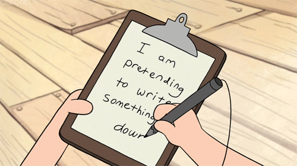

За курса
Функционално програмиране за напреднали със Scala
2021/2022
Днес :)

- Кои сме ние?
- Административни неща за курса
- Защо функционално? Кратка история на функционалното
- Защо Scala?
- Kакво ще учим?
- Ресурси
- Инсталиране и инструменти
- Начало на първа тема: Въведение във ФП със Scala
Ние?
 Здравко Стойчев
Здравко Стойчев Виктор Маринов
Виктор Маринов Васил Дичев
Васил –î–∏—á–µ–≤–°–±–∏—Ä–∫–∏ и админастративни неща
- Всяка сряда от 18:15 до 21:00
- Онлайн (поне засега)
- Платформа? Или Google Meet или Microsoft Teams (ще я фиксираме тези дни)
- Slack – най-лесно може да ни намерите там. Ще постваме всичко ново там
- Материали в GitHub: https://github.com/scala-fmi/scala-fmi-2022
- Домашни и финален проект – GitHub Classroom
Оценяване?
- Домашни през семестъра: 50 точки
- Два теста: 50 точки
- Финален проект: 50 точки
- Бонус точки
- Общо: 150+
Скала за оценяване (pun intended):
| Оценка | Точки | Дял |
| 6 | ≥ 120 | 80% |
| 5 | 103–119 | 69% |
| 4 | 86–102 | 57% |
| 3 | 68–85 | 45% |
| 2 | < 68 | < 45% |
Представете ни се за бонус точки
Споделете няколко думи за себе си и своите интереси и качете снимка с инсталирана и работеща Scala в #да-се-представим в Slack за 2 бонус точки.
Функционално? Кратка история
- 1930–1940 – Ламбда смятане от Алонсо Чърч
- модел на изчисление, базиран на композиция на анонимни функции
- 1958 – LISP от Джон МакКартни – първи език за ФП
- Повлиян от математиката
- Рекурсия като цел
- Въвежда garbage collection
- Кодът е данни
- 1973 – ML от Робин Милнър
- статично типизиране
- type inference. Типова система на Хиндли-Милнър
- Параметричен полиморфизъм (Generics)
- Pattern matching
- 1980-те – допълнително развитие, Standard ML, Miranda (lazy evaluation)
Функционално? Кратка история
- 1986 – Erlang от Джо Армстронг и Ериксън
- фокус на телекоми и толерантни на грешки дистрибутирани системи
- 1990 – Haskell, отворен стандард за ФП език
- абстракция чрез type classes
- контролиран монаден вход/изход
- 2000-те – Scala от Мартин Одерски (2004-та), Clojure от Рич Хики (2007-ма)
- Неизменими структури от данни
- Средства за конкурентни и дистрибутирани системи
- Комбинация на практики от различни езици (напр. ООП + ФП в Scala)
- Края на 2000-те до наши дни – ФП елементи се появяват в почти всеки език. Защо?
Мартин Одерски

- Професор в EPFL, Лозана
- Възхитен от ФП във време, в което Java изплува като платформа
- –†–µ—à–∞–≤–∞ да –≥–∏ –æ–±–µ–¥–∏–Ω–∏ в –Ω–æ–≤ език ‚Äì Pizza üçï ‚Äì като –¥–æ–±–∞–≤–∏ –µ–ª–µ–º–µ–Ω—Ç–∏ –∫—ä–º Java
- Параметричен полиформизъм (Generics)
- Функции от по-висок ред
- Pattern matching
- Имплементацията му на generics и изцяло новият компилатор, който написва, стават част от Java
Стъпка назад
- Java има много ограничения
- Как би изглеждал език, комбиниращ ФП и ООП, ако го дизайнваме в момента?
SCAlable LAnguage (Scala) – Януари 2004-та
- Без (твърде) много feature-и в самия език
- Вместо това малко, но пълно множество от мощни езикови конструкции
- Имплементиране на feature-и в библиотеки, използвайки тези конструкции
Език, който скалира според нуждите
Малка граматика

Малко, но мощни езикови средства,
които се комбинират добре едно с друго
Детайлна типова система
Симбиоза на ФП и ООП
Scala 3
- Чакахме го 8 години :)
- DOT – математически модел за есенцията на Scala на ниво типова система
- Dotty – изцяло нов компилатор с модерен дизайн, базиран на DOT
- Опростяване, изчистване и допълване на езика (списък на какво ново)
Scala 3
Курсът ни ще се базира на Scala 3

Ще отбелязваме кои са новите feature-и
Ще ви срещнем и с мъничко Scala 2 синтаксис
- много код все още използва него

Scala по света
- Може да се срещне в production общо-взето навсякъде по света
- Особено при дистрибутирани системи или ML/Data Science
- По света: Twitter, Netflix, Disney+, LinkedIn, Databricks, The Guardian, Airbnb и много други
- В България: В Ocado Technology, AtScale, Hopper, Estafet, Dopamine и други
- Активна общност с разнообразни и стабилни проекти с отворен код
- Typelevel екосистема – Cats, Cats Effect, Http4s, fs2, doobie и много други
- Kafka – distributed event streaming
- Spark – big data & ML
- Lightbend екосистема – Akka, Play Framework, Lagom, Slick
Какво ще учим üòä?
(част 1)
- Въведение във функционалното програмиране
- Основни подходи при функционално програмиране
- рекурсия
- неизменими (immutable) структури от данни
- функциите като първокласни обекти
- композиция на функции
- изразяване чрез типове
- ООП
- Трансформиране на данни
- Lazy изчисления
- Дизайн на типове чрез ФП
Какво ще учим üòä?
(част 2)
- Овладяване на страничните ефекти
- Функционална обработка на грешки
- Конкурентност, асинхронност, комуникация по мрежа (HTTP)
- Абстракции от по-висок ред – видове type classes
- –ë–∏–±–ª–∏–æ—Ç–µ—á–∫–∞ за –∞–±—Å—Ç—Ä–∞–∫—Ü–∏–∏ ‚Äì Cats üò∫
- Библиотечка за асинхронност и конкурентност – Cats Effect
- Изграждане на цялостнно Scala приложение
- структура
- управление на ресурсите
- домейн дизайн
- връзка с релационна база
- конкурентност и асинхронност
- HTTP
Какво ще учим üòä?
Разпределение по теми
- Въведение във функционалното програмиране със Scala
- ООП във функционален език
- Основни подходи при функционалното програмиране
- Fold, колекции, lazy колекции
- Pattern matching и алгебрични типове от данни (ADTs)
- Ефекти и функционална обработка на грешки
- Конкурентност
- Type classes
- Монади и апликативи
- Cats и Cats Effect
- Изграждане на Scala приложение
Ресурси
- Functional Progamming in Scala (1st edition, 2nd edition)
- Programming in Scala 5th edition
- Scala with Cats
- Ресурси онлайн, включително официалния сайт
- API документация